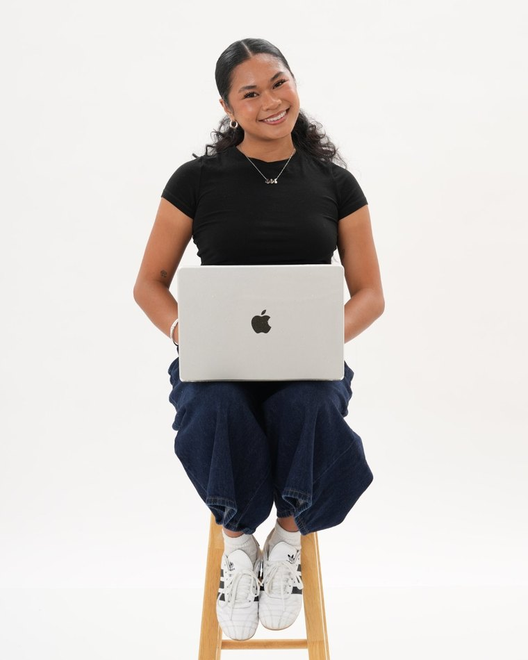

I'm a UX designer at Victoria's Secret & Co., working on e-commerce and omnichannel experiences for Victoria's Secret and PINK, from product discovery to checkout, loyalty and the in-store tools behind them.
Outside of that, I run Lani Media House, my creative studio for photography, content and social. One half of me thinks in user flows; the other thinks in visual aesthetics and marketing psychology.
At UC Berkeley I studied Cognitive Science and Psychology, and worked in a lab researching learning and decision-making. That's still how I approach UX: watch real behavior, find the moment someone hesitates, and design for that moment. Running a creative studio on the side keeps me honest about the other half, which is making people actually want to click.
In-store interviews, usability tests and data first, so decisions trace back to real behavior.
I build working, tappable prototypes, often AI-assisted, to test ideas before they get expensive.
Cross-functional workshops with Product, Engineering, Marketing and Creative keep quality high through launch.
WCAG, clear states and honest copy are part of the design, not a checklist at the end.